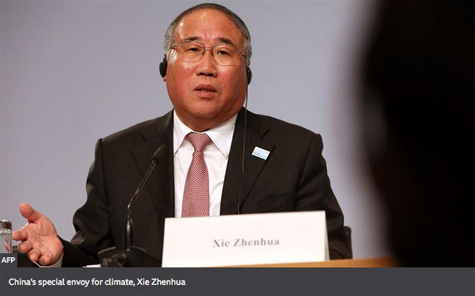
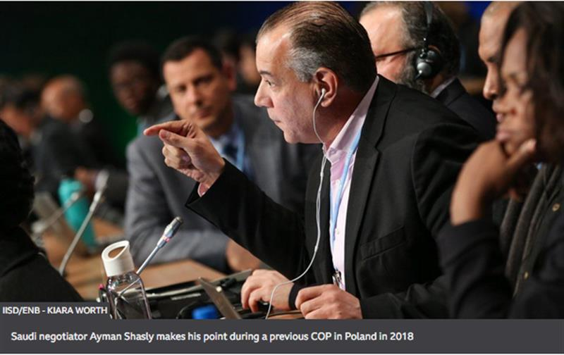
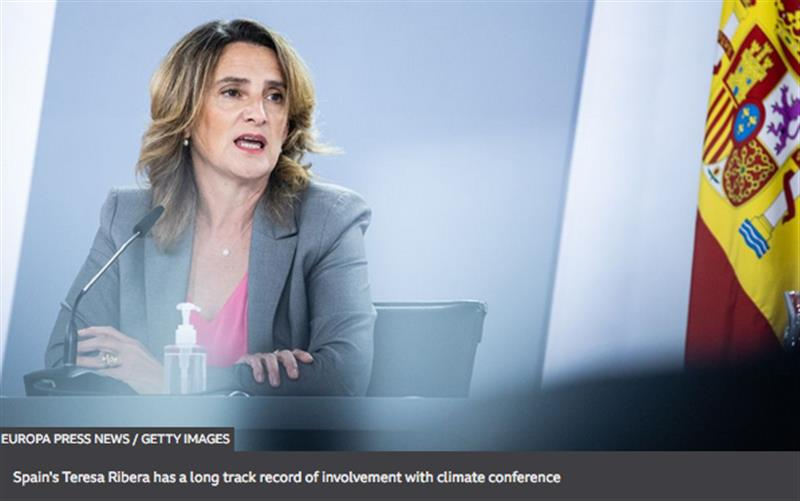

Climate change: Five dealmakers who will influence the outcome at COP26
By Matt McGrath
Environment correspondent
While Greta Thunberg, Sir David Attenborough and world leaders will attract most of the media attention at COP26, the real work of getting 197 countries to commit to changes will fall to lesser-known diplomats and ministers - the negotiators.
Their complex role requires a sharp mind, a deep reserve of tact and incredible endurance. Talks often go through the night and rarely finish on time.
One participant likened the job to playing four-dimensional chess with spaghetti.
Not only do countries have differing national priorities, but to make things even more confusing, nations forge alliances with each other and form negotiating blocs within the talks. Countries can be members of several different groups at the same time.
Here are five negotiators who will have a major influence on the summit's success or failure.
Xie Zhenhua: China's man for all seasons

Image source, AFP China's special envoy for climate, Xie Zhenhua
It had been presumed that China's veteran climate negotiator Xie Zhenhua had retired, but he was called back into the role at the start of the year, probably because of his close working relationship with Senator John Kerry, the current US climate envoy.
Their relationship was critical in the forging of the Paris agreement in 2015, which committed countries to reducing emissions.
Their COP26 priorities, however, are very different. Mr Kerry wants countries like China to commit to deeper carbon cuts, while during a recent and rare briefing with international media, Mr Xie made it clear that for him, Glasgow is about finalising the rules of the 2015 Paris climate agreement.
Technical arguments about carbon markets and other issues have been hanging over the process for the last three years - finalising them in Glasgow is seen as important to the process's credibility.
China's importance is because of its size - it's the world's biggest emitter of carbon dioxide - and at COP26 it is a key member of several negotiating blocs, including the biggest developing country grouping, known as the Group of 77 and China (although confusingly it now has 134 members).
It is also part of the Like-Minded developing countries group, in alliance with Saudi Arabia and India, as well as being in the Basic group with India and South Africa.
Saudi's resolute defender - Ayman Shasly

Image source, IISD/ENB - Kiara Worth - Saudi negotiator Ayman Shasly makes his point during a previous COP in Poland in 2018
Many Arab countries and developing nations take their cue in climate talks from the Saudis. Without their agreement, a successful outcome in Glasgow will not be possible.
For the past decade, Saudi Arabia's Ayman Shasly has been chairman of the Arab group of climate negotiators.
Formerly an employee of state oil company Saudi Aramco, Mr Shasly now wears many hats. He leads the Saudi team at the IPCC and is also a member of the board of the Green Climate Fund.
While Saudi Arabia has long been seen as opposed to rapid action on climate change, the world's largest oil exporting nation has softened its public tone in recent year and made a net zero commitment last month.
In recent days it has announced plans to achieve net zero greenhouse gas emissions by 2060, and to cut emissions of methane by 30% by 2030. All while, however, continuing to produce and export oil for decades to come.
Mr Shasly has a formidable reputation in the negotiations, with a strong focus on defending Saudi's national interest.
'We are impacted by climate change, perhaps more than anybody else,' he told the Carbon Brief website in a rare interview in 2018.
'We are a desert country that heavily relies on this single source of income. We have such a vulnerable economy, fragile economy, and with oil, we eat, we feed, we travel, we educated our people, we have medical care and everything.'
Alok Sharma: The Briton in the middle
Image source, AFP - UK minister Alok Sharma will preside over COP26
The man tasked with bringing all the different threads of the COP26 talks to a successful conclusion is UK minister Alok Sharma.
Having spent his career trying to be, in his own words 'extremely boring', Mr Sharma has now been thrust into the full glare of the world's media.
So far, he's been praised for his efforts to find common ground between countries - but things will change up a gear when he is confirmed in the role of COP president at the beginning of the meeting.
His every word and action will be subject to intense scrutiny, and he will be mindful of history when he takes his seat at the top table.
His role model will likely be Laurent Fabius, the French foreign minister who successfully guided the Paris text to adoption in 2015. Mr Fabius, with the air of a firm but respected schoolmaster, was able to encourage and cajole reluctant countries towards a historic compromise.
Sheikh Hasina: The voice of the vulnerable
Image source, AFP - Sheikh Hasina addressing the UN General Assembly
The prime minister of Bangladesh speaks on behalf of the Climate Vulnerable Forum, a grouping of 48 of the countries most threatened by climate change.
She's an experienced and straight-talking politician, who will bring the lived experience of climate change to the COP. Just last year, about one-quarter of Bangladesh was underwater as floods threatened a million homes.
'People like Prime Minister Hasina put a human face on climate change and can help world leaders understand what climate change already looks like,' said Dr Jen Allan, an expert in international relations from Cardiff University.
Despite the fact that they are among the poorest nations, the Climate Vulnerable and the Least Developed Countries group have a strong track record in the negotiations.
These countries 'punch above their economic weight, so to speak', says Dr Allan.
'Because they are a strong moral voice, and because decisions are taken by consensus, they have been able to get a good deal of progressive decisions through the UN machinery.'
According to Quamrul Chowdhury, a Bangladeshi negotiator, who works as part of Sheikh Hasina's team, the vulnerable nations are coming to Glasgow with a clear set of goals.
'There are over one billion people now on the hook of adverse climate impacts,' he told me. 'We want to get them off the hook by getting the richest countries to steeply cut back emissions, to fix the outstanding Paris rules, to ramp up climate finance and to address loss and damage.'
Teresa Ribera: Europe's bridge-builder

Image source, Europa Press News / Getty Images - Spain's Teresa Ribera has a long track record of involvement with climate conference
Spain's Teresa Ribera has been involved in the UN climate negotiations process for decades, and she is also an experienced politician, currently serving as Spain's minister for the ecological transition.
In government, she helped oversee Spain's transition away from coal, which has been hailed as a model for how countries can make the move to renewables without destroying jobs and communities.
Spain is part of the EU, which is a standalone bloc in the climate negotiations. Europe likes to see itself as the most ambitious group of richer nations in pushing for deeper emissions cuts. Experienced negotiators like Ms Ribera know that the key to progress on climate is to build coalitions of the willing.
The Paris Agreement was the result of a compromise between groups representing rich and poor countries and island states, says Michael Jacobs, a former climate adviser to ex-UK Prime Minister Gordon Brown and now professor of political economy at the University of Sheffield.
'Once these groups had hammered out a common position, they were then able to persuade the other countries to come on board, which they did.'
Ms Ribera was seen to be a key player in developing this broad-based coalition. She is known to have very good connections with South America, China and the US - relationships that will be key if Glasgow is to deliver.
Matt McGrath has been covering climate change for the past 15 years, reporting from 10 COPs along the way. You can follow him on Twitter @mattmcgrathbbc
SOURCE: BBC NEWS